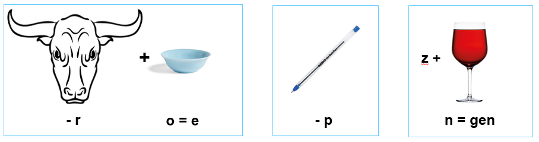

Loop 50 stappen op 127 graden en dan nog 25 stappen op 35 graden.
Zoeken naar GPS verbinding
N
Vraag 5
Op de foto zie je een cupido gemaakt van steen. Wat zijn de twee kenmerken van dit beeld?

Dit is het verkeerde antwoord. Probeer het nog een keer!
Juist, 'stiekem en zwijgen' zijn de twee kenmerken van deze cupido. Zittende Amor, zoals deze cupido heet,
heeft verschillende bijnamen waarvan de bekendste 'De dreigende liefde' is, omdat de blik heel erg dreigend is.